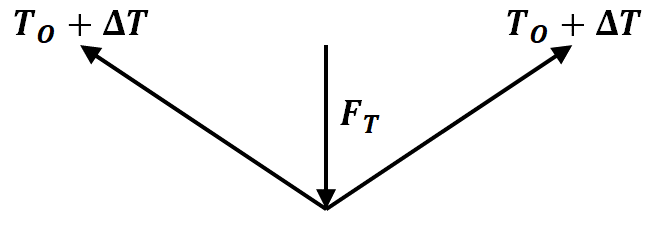

Guitar String Tuner
Introduction
The lap steel guitar is a stringed instrument that is played while laid horizontally on a performer’s lap or stand. Pedal actuated tuning systems were introduced to the lap steel guitar, allowing the performer to quickly change the tune of the strings without interfering with their ability to perform. However, the additions of such tuning devices increase the price of a lap steel guitar from hundreds of dollars to thousands. Since a simple lap steel guitar is a low-cost instrument for musicians and an accessible avenue for hobbyists to build their own guitar, a simple and cheap mechanism for ergonomically changing the tune of the strings has great potential in the consumer market. By using the fundamental principles of static analysis, additive manufacturing, and wood construction, a simple, low cost, and accessible pedal actuated prototype tuning device for a lap steel guitar was created.
Mechanical Design
There are a few engineering challenges in creating the mechanism to change the pitch of the guitar string. The main problem of interest is creating a mechanism under a cost constraint, which operates with low friction, has ease of manufacturability, and has a straightforward way to install the mechanism on the body of the guitar. The actuation of the mechanism should be adjustable so that a wide array of desired tones can be reached. For the mechanism to accurately achieve these tones, the required change in displacement of the strings needed to reach a final frequency had to be calculated using static analysis. The force required to change the distance must also be calculated so that the design of the pedal ensures it can apply a large enough force. Knowing how much force is required and what force is realistic also provides an upper bound to the range of deformations and changes in frequencies that are possible using intermediate steps of the pedal. For the sake of this prototype, the string gauge used is 024. The string will be tuned to an initial frequency of 207.7 Hz or G#3, and the prototype mechanism will aim to achieve a final frequency of 220.16 Hz or A3. The proposed design solution that will be used is a simple rotary spring mechanism. The mechanism works by using an L-beam structure on each side of the headstock, as shown in Figure 1.
Each L-beam rotates about a central axis point with ball bearings and is connected by a rod. The mechanism is manufactured in three composite parts for ease of manufacturability and assembly using Fused Filament Fabrication or 3D printing, as shown in Figure 2.
Ball bearings are used to ensure minimal friction of the rotary spring mechanism and to guarantee exact fittings between the body of the guitar and the L-Beams. A ball bearing is press-fitted into each L-Beam, which goes through a shoulder screw that is screwed into a threaded insert on each side of the body of the guitar, as shown in Figure 3. A through hole was drilled into the side of the main guitar body with an 8 mm diameter to accommodate the threaded inserts and shoulder screws.
Using a Bowden cable system tethered from a foot pedal to the mechanism, as shown in Figure 4, the user can quickly transition from an actuated state, as shown in Figure 5, to a rested state, as shown in Figure 6.
The tension from the Bowden cable created by force applied by the user through the foot pedal generates an external moment about the central axis point, which is counteracted by an opposing moment supplied by loop springs. These loop springs are connected to the main body of the guitar using screws. The loop springs keep the mechanism tensile, providing controlled motion and the ability to automatically return the mechanism to the rested state from the actuated state. At each end of the Bowden cable, there is a ball with a larger diameter than the thickness of the cable. The Bowden cable is placed securely by using a cable locking system that attaches each end of the Bowden cable from the pedal to the headstock. The cable locking system was designed to have pockets that the ball at each end of the Bowden cable can slide into. When the ball ends of the cable are in these pockets, the balls will catch on the locking system and pull the mechanisms within the machine when the Bowden cable is actuated. The cable locking system is featured on the rod that connects the two L-Beams, as shown in Figure 7, and the foot pedal, as shown in Figure 8.
Static Analysis
The mechanical analysis for the rotary spring mechanism begins with the free body diagram of the initial state of the guitar, as shown in Figure 12, and the final state of the guitar, as shown in Figure 13. The free body diagram gives initial length as the sum of a+b, where a is the length between the boundaries of the string, which the user plays, and b is the length between the boundary point of a and the guitar string tuning key.

The equation that relates frequency with the tension of the guitar string is the vibrating string equation shown in Equation 1.
$$f=\frac{1}{2L}\sqrt{\frac{T}{\rho_L}}$$
By performing a Taylor series expansion of Equation 1 of frequency with respect to tension, the partial derivative of frequency with respect to tension is shown in Equation 2.
$$\frac{\partial f}{\partial T}=\frac{1}{4L\sqrt{T\rho_L}}$$
By doing algebraic manipulation on Equation 1, Equation 3 is achieved.
$$\frac{f_o}{T_o}\ =\frac{1}{2L\sqrt{T\rho_L}}$$
The change of frequency can be shown using the Taylor Series expansion, as shown in Equation 4.
$$f=f_o+\frac{\partial f}{\partial T}\Delta T$$
The change in frequency can be described as the partial derivative of frequency with respect to tension multiplied by the change in tension, as shown in Equation 5.
$$\Delta f=\frac{\partial f}{\partial T}\Delta T$$
Equation 3 is related to Equation 2 by a factor of ½, as shown in Equation 6.
$$\frac{\partial f}{\partial T}=\frac{1}{2}\frac{f_o}{T_o}$$
By plugging in Equation 6 into Equation 5, the Equation 7 is formed.
$$\Delta f=\frac{1}{2}\frac{f_o}{T_o}\Delta T$$
Equation 7 can be rearranged to form Equation 8, giving the change in tension in terms of constants of initial tension, initial frequency, and the desired change in frequency.
$$\Delta T=2T_o\frac{\Delta f}{f_o}$$
By using the relationship between stress, force, and area in Equation 9 and the relationship between strain and initial and final length in Equation 10, the constitutive equation is resulted in Equation 11.
$$\sigma=\frac{F}{A}$$
$$\epsilon=\frac{L-L_o}{L_o}$$
$$\sigma=E \epsilon$$
Substituting Equation 9 and Equation 10 into Equation 11 results in Equation 12.
$$\frac{F}{A}=E\frac{L-L_o}{L_o}$$
The string displacement is given in terms of initial length and final length in Equation 13.
$$\delta=L-L_o$$
The initial length of the string is the sum a+b, as shown in Equation 14, and the final length is calculated using the free body diagram shown in Figure 14, resulting in Equation 15.
$$L_o=a+b$$
$$L=a+2\sqrt{\delta^2+\left(\frac{b}{2}\right)^2}$$
Equation 14, Equation 15 can be substituted into Equation 11 to get Equation 16, which gives the strain of the string in terms of vertical string displacement and the lengths a and b.
$$\frac{L-L_o}{L_o}=\frac{2\sqrt{\delta^2+\left(\frac{b}{2}\right)^2}-b}{a+b}$$
Solving for horizontal displacement \delta in Equation 16 gives Equation 17. The horizontal displacement \delta is important because this horizontal displacement will give the exact displacement the user needs to move the pedal with their foot, which is crucial for the user to achieve the desired frequency consistently.
$$\delta=\sqrt{\left(\frac{\Delta T\left(a+b\right)}{2\left(EA\right)_{eff}}+\frac{b}{2}\right)^2-\left(\frac{b}{2}\right)^2}$$
The force applied when the string displaces by \delta is found by using the free body diagram in Figure 15. By solving for component forces in the y axis, Equation 18 and Equation 19 is achieved.

\$$\Sigma F_y=0=2\left(T_O+\delta T\right)\frac{\delta}{\sqrt{\delta^2+b^2/4}}$$
$$F_T=2\left(T_o+\Delta T\right)\frac{\delta}{\sqrt{\delta^2+\left(\frac{b}{2}\right)^2}}$$
To solve for the vertical displacement of the string in Equation 17 and the applied force required to achieve the final frequency in Equation 18, the constants a,b,f_o,\Delta f,T_o,\left(EA\right)_{eff} must be known. Value a and value b are found by measuring the distances of the length between the boundaries of the string, and the length between the boundary point of a and the guitar string tuning key, respectively. The value f_o and value \Delta f is determined from finding the difference between the initial note of G#3 and final note of A3. The value of T_o and \left(EA\right)_{eff} is found experimentally. Table 1 shows these values.
Using these solved values from the constants, the required change of length \delta on the guitar string to achieve a pitch frequency of A3 is 0.29 inches. The required force to achieve this change in length is 5.21 lb. But as the user will be using a foot pedal rather than pulling directly from the headstock, static analysis of the foot pedal is required to ensure the proper design of the foot pedal to ensure consistency of the performance of the product. The values of interest in the static analysis of the foot pedal are the angular displacement needed to achieve the string displacement \delta and the force required to achieve this angular displacement. Figure 16 and Figure 17 show the components for the foot pedal mechanism, which is used by the user pressing his/her foot at the end of the pedal of Figure 16. The nail through the end of the pedal stops the pedal at an exact angular position, which allows the user to achieve consistent notes through play. The height of the nail determines the final frequency of the guitar string. The objective is to find the length of the nail as a function of initial frequency and final frequency for the mechanical design of the foot pedal. This length h is shown in the free body diagram of the pedal in Figure 18.
The constant lengths of the foot pedal are shown in Table 3. The green line d shows the guitar string connected to pins C and A. The user applies an external force to the pedal at point D, which rotates the pedal about pin B. This rotation increases the length of the green line d. The goal is to find the exact angular displacement of the pedal such that the length d displaces by the exact length \delta, which is the vertical displacement of the string needed to achieve the final frequency of A3. The angular displacement of the pedal will then result in the exact height h of the nail needed to maintain the angular displacement when a user presses his/her foot down on the pedal, as reaction forces from the base of the pedal will keep the desired angle stable. The first step in determining the height h of the nail is to first determine the length d using the Law of Cosines, as shown in Figure 19.
$$d=\sqrt{e^2+c^2-2eccos{\theta}}$$
After d is determined, angle \gamma is calculated using the Law of Cosines in Equation 22 and Equation 23. Angle \gamma is the new angle \angle ABC after the user presses down on the foot pedal to achieve a net string displacement of d+\delta inches. This displacement is shown in the free body diagram in Figure 20.
$$\left(d+\delta\right)^2=c^2+e^2-2cecos{\gamma}$$
$$\gamma=arccos{\left(\frac{c^2+e^2-\left(d+\delta\right)^2}{2ce}\right)}$$
After \gamma is determined, the complement \alpha is found using Equation 24. The angle \alpha is equal to \angle DBE, as shown in Figure 21. The angle \alpha is then used to find the length h, as shown in Equation 21.
$$\alpha=\ 90-\gamma$$
$$tan{\alpha}=\frac{h}{f}$$
$$h=ftan{\alpha}$$
$$e^2=c^2+\left(d+\delta\right)^2-2c\left(d+\delta\right)cos{\beta}$$
$$\beta=arccos{\left(\frac{c^2+\left(d+\delta\right)^2-e^2}{2c\left(d+\delta\right)}\right)}$$
The force required on the end of the pedal to achieve this length is shown in the free body diagram in Figure 23 and Equation 28 and Equation 29.
$$\Sigma M_B=0=cF_Tsin{\beta}-fF_F$$
$$F_F=\frac{cF_Tsin{\beta}}{f}$$
The force applied to the pedal is less than the direct force needed to press on the guitar string at the headstock, as the force required on the pedal is 3.49 lb. and the force applied directly on the string is 5.21 lb., resulting in a mechanical advantage value of 1.49. This mechanical advantage is due to the pedal acting as a Class I lever. The mechanical advantage is shown in Equation 30.
$$MA=\frac{F_T}{F_F}=1.49$$